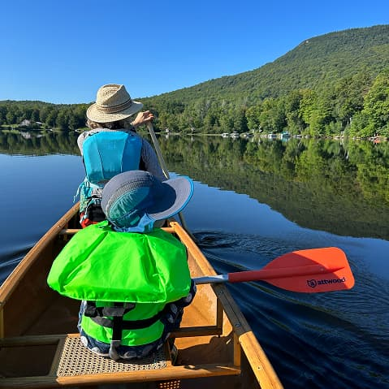
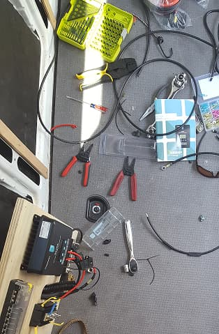
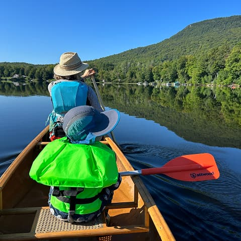
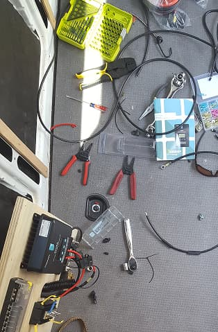

A designer who loves building things—because that's how I learn best.
Background
I'm currently a Principal Product Designer at SensorUp, working on IoT and sensor data platforms. My career spans B2B2C marketplaces at Premise, 0 to 1 products at Panorama Education, and data visualization for Fortune 100 companies at Ben Fry's Fathom Information Design.
I specialize in transforming complex data into intuitive experiences through deep user understanding, rigorous systems thinking, and rapid prototyping. My work focuses on enterprise SaaS, data analytics, and design systems that scale.
My Approach
Understand the Why
Deep user research to uncover real problems, not just stated needs. Start with understanding before solutions.
Rapid Prototyping
Test assumptions early through quick prototypes. Iterate based on real feedback, not intuition.
Systems Thinking
Design patterns and systems that scale. Reveal insights, hide complexity, ship faster.
Skills & Tools
Design
- Product Design
- UX Research
- Design Systems
- Prototyping
- Data Visualization
Tools
- Claude / Cursor / Lovable
- Figma
- Processing.org
Beyond Design
I'm passionate about learning new skills and ways of thinking. When I'm not designing, you'll find me working on personal projects ranging from data visualization experiments to electrical engineering builds and vertical gardening.
Outside, I love exploring the woods—whether it's mountain biking down trails, foraging for mushrooms, or going on adventures with my family. These experiences remind me to stay curious, embrace uncertainty, and find beauty in unexpected places.
 



Let's Work Together
I'm always interested in hearing about new projects and opportunities.